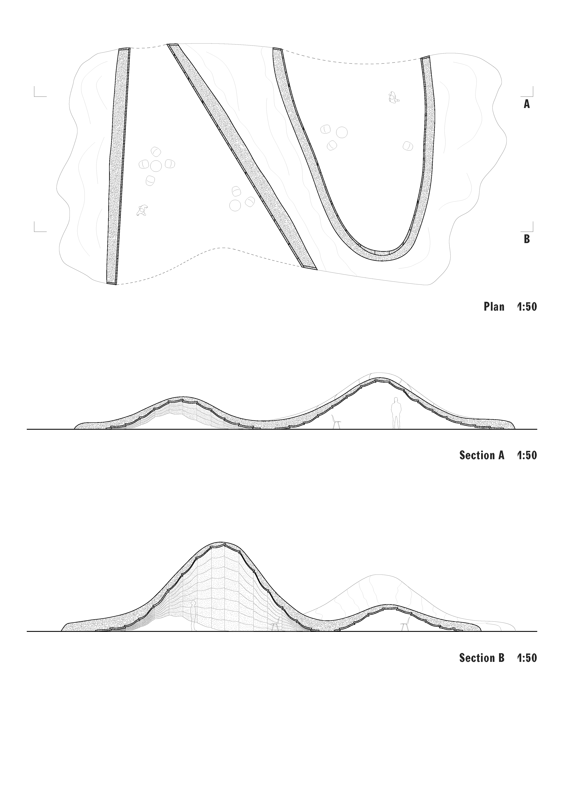
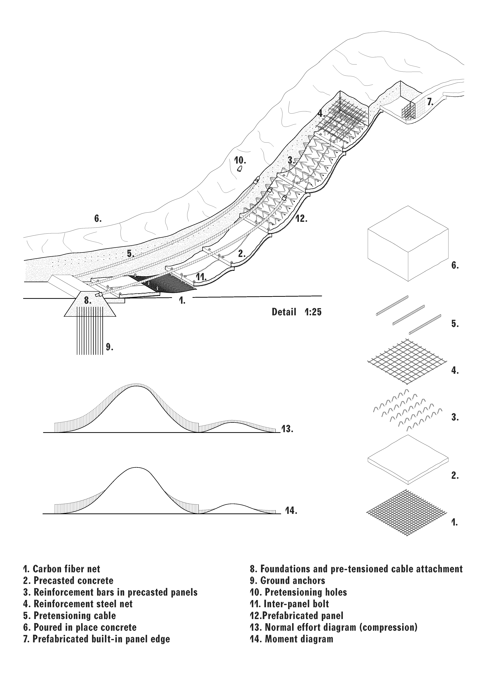
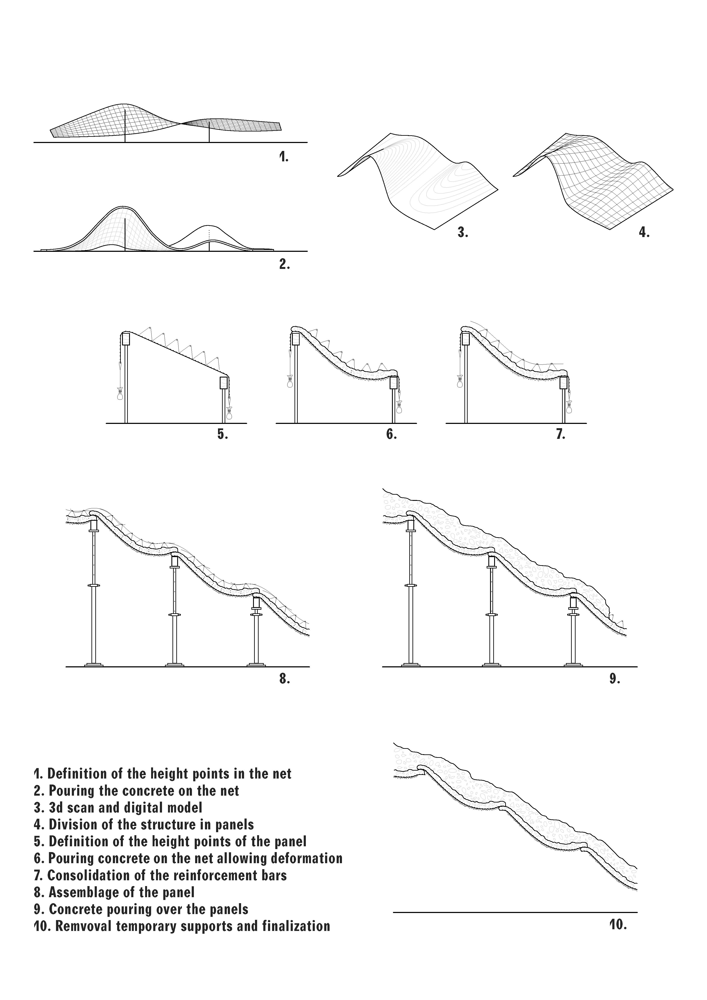
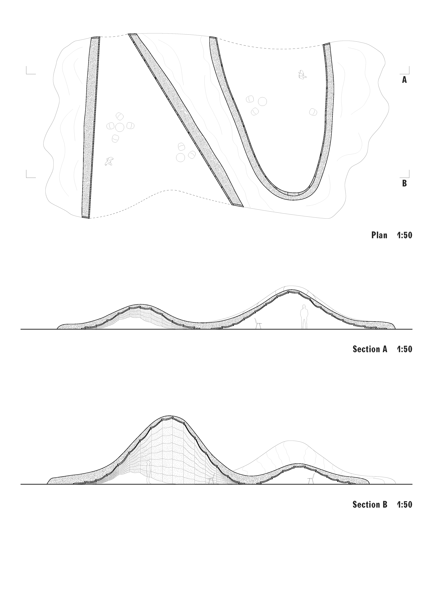
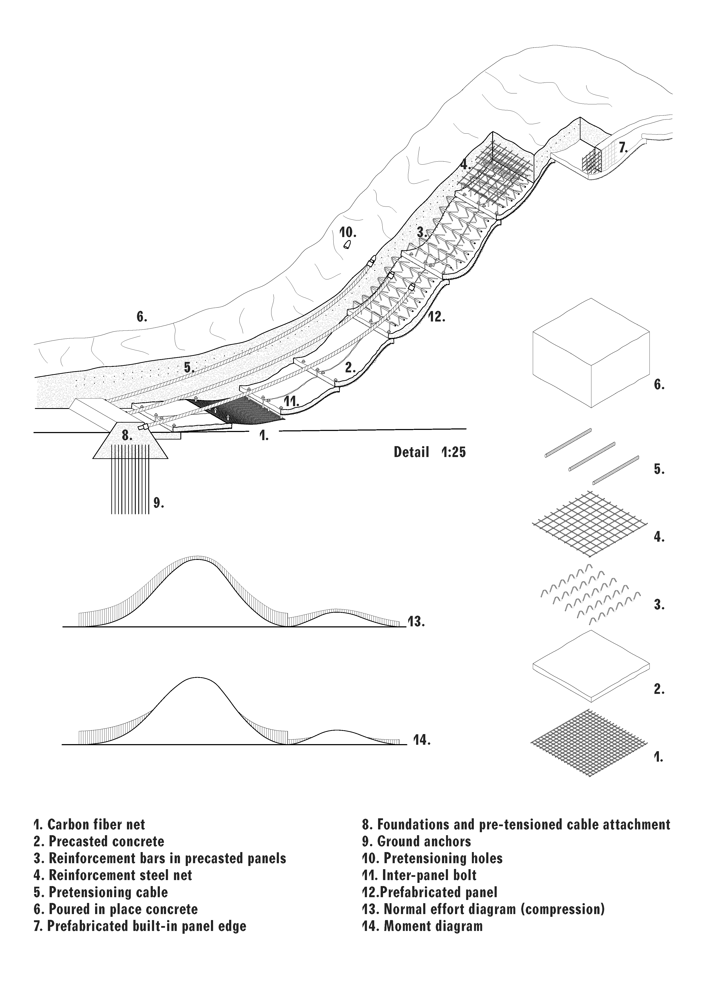
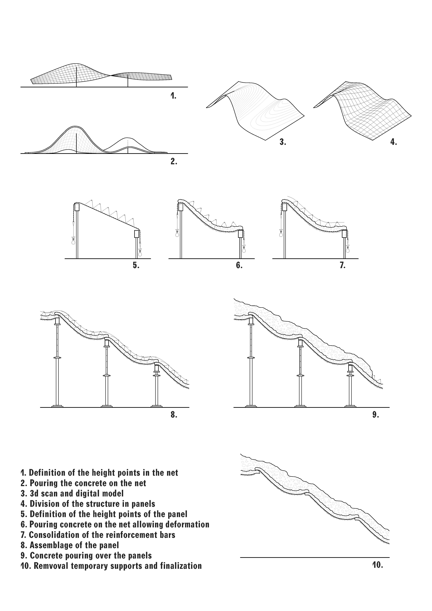

Rhapsody in flexure, steel and concrete
The research on concrete as a study material arises from an interest in its fluidity and viscosity, which, due to its particular composition, manages to defy gravity solely through the obstacle it comes into contact with. The marriage between concrete and steel is re-considered, discovering new relationships and unconventional degrees of freedom. Following the gravitational pull, the different materials influence each other, giving birth to a structure as the concrete weight bends and stretches the reinforcements. The net is an obstacle to the concrete droplets: some can filter through while others need to find alternative paths. The bending of the net and the weight of concrete generate spaces under which various human activities can take place while giving protection from the outer environment. The act of pouring represents the generation of specific space, as from the moment the material is released, the space formation process begins solely through the force of gravity. The study of the physical and mechanical properties of the materials allows a suitable translation to a technology and process so that an architectural space can emerge.


 




